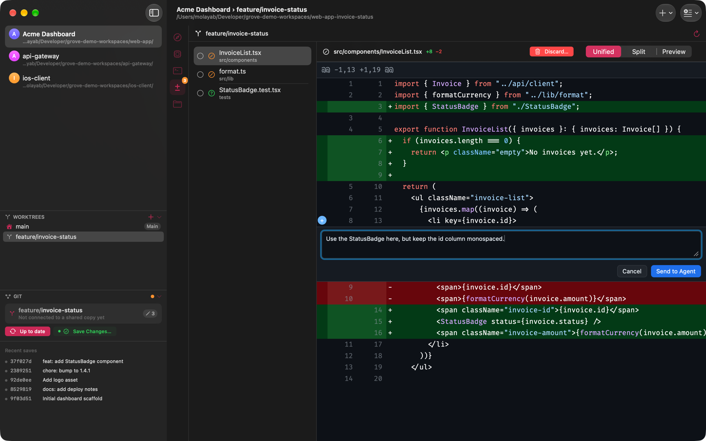

Guía
Grove para Mac · Actualizado en noviembre de 2026
Claude Code es un programa de terminal, y Grove lo respeta. Ejecuta el comando claude real en
una terminal real (un PTY), en la carpeta de tu proyecto, con tu propio entorno, configuración y sesión.
Grove no hace de proxy, no agrega su propio modelo de IA, no inyecta credenciales ni le pasa tu código al
agente como argumentos. Es el mismo Claude Code, con un mejor espacio de trabajo alrededor.
Grove encuentra los agentes instalados en los lugares habituales, incluidos ~/.local/bin,
Homebrew y Bun, aunque abras la app desde el Dock y no desde una terminal.
Grove no está atado a un proveedor. Ejecuta Claude Code, opencode, Codex, Gemini CLI y Aider. Cada checkout recuerda qué agente elegiste, y puedes abrir varias pestañas de agente lado a lado. Tus pestañas, su orden y el agente de cada una vuelven al reabrir la app.
La pestaña Cambios lista cada archivo modificado con un diff estilo GitHub y resaltado de sintaxis. Los archivos que ya miraste quedan marcados como vistos, y la marca se borra si el agente los vuelve a cambiar. Haz clic en "+" en cualquier línea para dejar un comentario. Los comentarios se juntan en una sola revisión, y Enviar la escribe completa en el prompt del agente para que la leas antes de pulsar Return. Grove nunca la envía por ti.

Guarda los prompts que siempre vuelves a escribir y los comandos de shell que usas a diario, por proyecto o
en una biblioteca compartida. Ejecútalos desde la barra de herramientas o la paleta ⌘K. Las plantillas
completan valores como {{branch}}, {{date}} o tu portapapeles, y te preguntan
lo demás antes de ejecutar.
Dale a cada agente su propia rama en su propio worktree. Al cambiar de worktree en la barra lateral, el agente, la shell, los archivos, el diff y el panel de git se mueven juntos, y cada agente sigue corriendo mientras miras otro. Mira Una app de git worktrees para Mac para ver cómo funciona.
Grove está escrita en Swift y SwiftUI, no en Electron. Sigue la apariencia de tu sistema, abre rápido y está firmada con Developer ID y notarizada por Apple. Cerrar la ventana no detiene nada: tus agentes y shells siguen corriendo hasta que salgas de la app.
Grove no incluye un modelo de IA. Necesitas Claude Code instalado y tu propia cuenta de Anthropic, igual que en Terminal. Lo que el agente envía queda entre tú y su proveedor; Grove en sí no sube tu repositorio.
Sí. Usa opencode, Codex, Gemini CLI o Aider, o solo los paneles de shell, archivos y diff.
Hay una prueba gratis de 7 días. Después, una licencia cuesta $9.99 en un solo pago para un Mac, con todas las actualizaciones futuras incluidas. Grove necesita macOS 26 o posterior.